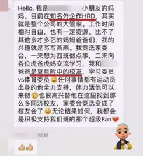
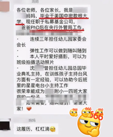
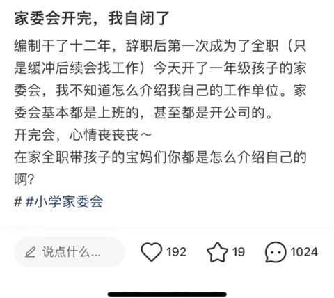

“我看到很多孩子在学校面临各种挑战，而家长们往往因为忙碌而忽视了这些。我觉得自己有责任去关注、去参与，为孩子们创造一个更好的成长环境。”
家委会全称“家长委员会”。根据教育部发布的《教育部关于建立中小学幼儿园家长委员会的指导意见》（下称《指导意见》），家委会的基本职责包括参与学校管理、参与教育工作、沟通学校与家庭等。家委会成立的初衷，主要是加强家庭与学校之间的沟通与联系，促进家校共育，推动学生的全面发展。
在当下教育环境中，家委会作为一个特殊的存在，扮演着家校沟通的桥梁角色。文姐是三个女孩的母亲，早在大女儿小学的时候，她就开始进入家委会，现在小女儿刚升高一，她就竞选上了家委会主任。
文姐回忆道，早在孩子们很小的时候，她就意识到了家委会的重要性。“我看到很多孩子在学校面临各种挑战，而家长们往往因为忙碌而忽视了这些。我觉得自己有责任去关注、去参与，为孩子们创造一个更好的成长环境。”抱着这样的初衷，她毅然决然加入家委会，这一待就是十几年。她希望通过担任家委会主任，能够协助老师解决一些实际问题，同时也为孩子们树立一个积极的榜样。
说到家委会的日常工作，文姐说，“你学校要办什么，捐款什么都是我们家委几个人出的，他自己没有加入家委的人，他根本就不知道说我学校还有这些事要做，还有孩子们有要搞这些活动，比如说他们六一儿童节的活动，元旦的活动，你要给他们孩子买吃的买这些道具，然后他们训练的时候给他们奖励，这些都是你参与家委之后你才会想到说要去做的，这些费用，你不敢去找别人要的，他们不懂，我们几个家委就会说五个人一人一百块，然后大一点的活动一人三百，然后你又几千块钱就出来，这个活动就搞完了”。
谈到在家委会中印象最深刻的事情，文姐说是小女儿初二的时候，发现一些孩子在学习上处于踩线状态，有可能进入当地知名的一中。为了让这些孩子得到更多的关注和帮助，她与几位家长和老师商量，决定通过家委会的力量，为孩子们创造更多的学习机会。然而，在实施过程中，她很快发现这样做容易引发一些误解和质疑。有些人认为，这样做违背了双减政策的初衷，让学校显得过于功利。对此，她深感无奈，但也从中学到了如何与家长、孩子和学校之间保持平衡。她表示，现在的她不再过分关注孩子的学习成绩，而是更注重孩子的兴趣和特长发展。她认为，每个孩子都有自己的成长轨迹，家长和老师应该尊重孩子的选择，给予他们足够的空间去探索和成长。
“在家委会做这么多，你会不会觉得累？”面对这个问题，文姐摆了摆手，笑了。“我们愿意付出，我们时间上付出，劳动上付出，金钱上也付出。”但同时，文姐也表示，在家委会中其实能够让自己得到成长和很多有用的信息，还能交到很多志同道合的朋友。“我在为了孩子的成长中，遇到了很多这种志同道合的或者是比较上进的有爱心的家长，同时让我的事业也得到了帮助，也让我自己的眼界和我的能力素质也得到了提升。比如说我做家委会主任，我们就会有副主任，有各种人，我们一群人都是比较有爱心的。其实做家委是非常需要爱心的，但是不管从哪里也好，从家里也好，从养孩子这里也好，只要我们付出，你自己就会得到成长，赠人玫瑰，手有余香，我们付出，我们的爱心就打开，同时也会收到很多的爱这种感觉。”家委需要去组织活动、捐赠物资，和老师打交道，极大锻炼了她的社交能力、组织能力，同时还能与时俱进，时刻知道教育政策的改变。家长群中也会经常交流教育理念，分享教育方法，讨论孩子的问题，从中也能学到很多。
文姐的故事，让我们看到了家委会在家校共育中的重要作用。她用自己的实际行动诠释了什么是真正的家校合作，如何在家校之间搭建起一座坚实的桥梁。她的经验和做法，值得我们每一位家长和教育工作者学习和借鉴。
在双减政策的背景下，我们更应该关注孩子的全面发展，而不是过分追求学习成绩。家委会作为家校沟通的桥梁，应该积极发挥作用，推动家校共育的进程。我们应该尊重每个孩子的个性和兴趣，给予他们足够的支持和帮助，让他们在快乐中成长、在成长中快乐。
在教育的大家庭中，有很多如文姐这般充满爱心与责任感的家委会成员用实际行动诠释了家委会的真谛，为家校合作贡献着自己的力量。然而，在现实中，家委会的职责被误解或过度扩张的情况也屡见不鲜，给家长、学校以及孩子带来了一系列不必要的困扰。
电视剧《小别离》中也描述了这样的场景，为了让孩子在学校得到更多的关注和资源，家长们不惜一切代价参与家委会的竞选和活动。他们希望通过成为家委会成员，能够接近老师甚至学校管理层，为孩子争取更多的课外活动机会、更丰富的学习资源，甚至在升学问题上寻求便利。这种功利化的心态，不仅扭曲了家委会的初衷，也给孩子带来了不必要的压力。
据中国青年报社社会调查中心的调查显示，高达70.3%的受访家长表示家委会给他们带来了一些困扰。其中，超过半数的家长担心评优奖励等机会会偏向家委会的孩子，他们认为家委会成为了在老师面前刷存在感的最佳途径。这些家长希望通过自己的“付出”，能够换取孩子在校的优先待遇，从而让孩子在竞争中占据更有利的位置。
此外，家长之间的相互攀比现象也在家委会中愈演愈烈。一些家长为了显示自己的实力和社会地位，不惜花费大量时间和金钱来参与家委会的活动和竞选。他们希望通过这种方式来赢得老师和学校的青睐，从而为孩子争取更多的机会和资源。然而，这种攀比行为不仅让家委会变成了“名利场”，也让孩子在无形中承受了更多的压力。
|  |  |
|  |
更令人担忧的是，一些家委会成员滥用职权，将家委会变成了班级的义工和“财政大臣”。他们擅自筹集班费、购买贵重礼品，甚至将持反对意见的家长排除在集体之外。这种滥用职权的行为不仅违背了家委会的初衷，也损害了其他家长的利益，更让家委会的公信力大打折扣。
为了办好家委会，我们首先需要确保家委会常委的民主选举。让那些有时间、有精力、有公共责任心且正直的家长通过民主选举，成为家委会的核心力量。同时，我们也要加强家委会成员的培训和教育，让他们明确自己的职责和权力范围，避免滥用职权和过度干预学校事务。
此外，各地教育监管部门在家委会的监管中也绝不能失责。他们应该加强对家委会的指导和监督，确保家委会的工作符合相关法规和规定。同时，也要深入调查研究，及时解决家委会运行过程中出现的问题和困难，确保家委会能够真正发挥其应有的作用。
总之，家委会作为家校合作的重要桥梁和纽带，应该发挥其应有的作用。我们应该加强家委会的建设和管理，确保它的职责得到正确履行，为孩子的成长和教育事业贡献更多的力量。